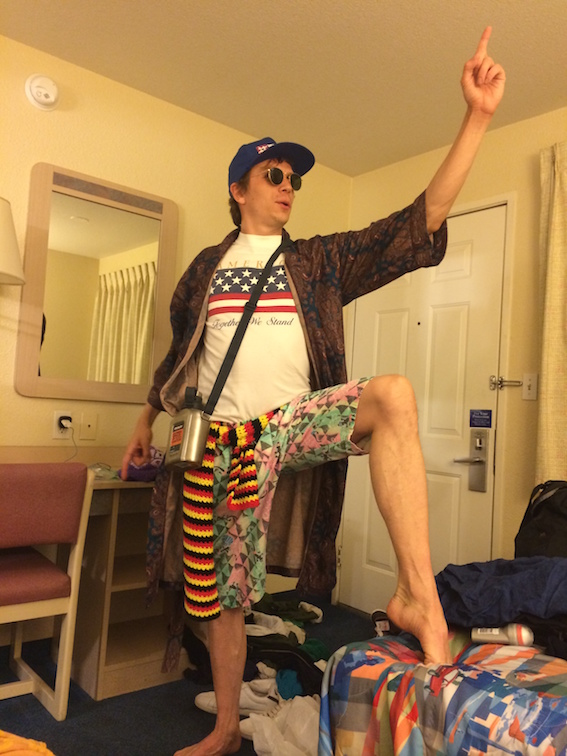

First week was about command line and version control.
After one month of Ruby and one week of the pre-course, the world may not ever be the same again. Can't wait to rush in, but before I can fully commit, I need to finish at Global Business Labs - the NGO I am currently working for.
One week in Uganda and then I am going all into this new fab coding adventure.

Huzzah!